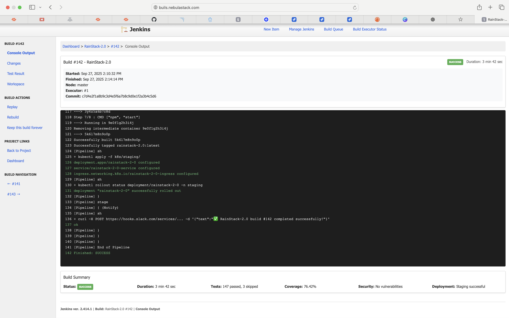

My First Pipeline as a DevOps Engineer 🚀
By Neil Jyoshi 👨💻
It’s been just under a month since I joined NebulaStack Pvt. Ltd. 🏢 and I’m still wrapping my head around how everything fits together. Today, though, felt like a turning point — I finally finished my first end-to-end pipeline at work! 🎉
Settling into the role 🧑🎓
Coming straight out of college 🎓, the transition has been eye-opening. In academia, most of what I learned was theory — diagrams on CI/CD, lectures about cloud architecture ☁️, or group projects that never went beyond running on one person’s laptop 💻. I had never really touched a production system before.
Here, it’s a whole new world 🌍. The first few weeks were a blur of logins 🔑, RhinoTunnel VPN setups 🔒, and forms 📝. Honestly, I think I spent more time inside our HRFlare than inside an IDE 🖥️. Every time I needed to update my profile or check a leave balance, I found myself lost in that system. It was overwhelming but also exciting 😅.
The pipeline story 🛠️
This week, my lead finally gave me a real task: set up a pipeline for Project Rainstack 2.0 🌧️. Seeing that project name on my Jira board made me nervous 😬 and proud 😌 at the same time.
The pipeline itself wasn’t rocket science 🚀, but for me, it was huge:
- Pull the code from GitHub 🐙
- Build the app 🏗️
- Run some tests 🧪
- Package it with Docker 🐳
- Deploy it to our test cluster via Jenkins 🤖
The Jenkins UI looked intimidating at first 😱. I must have broken things a dozen times before it finally worked. When that “SUCCESS” label popped up ✅, it felt way better than any grade I ever got in college 🏆.
People make the difference 🤝
I would never have managed this without my manager Ravish Prakash Sharma 🙏. He reviewed my pipeline scripts and gave the final approval when I was too scared to hit the button myself 😅. Slack must be tired of my notifications by now because I pinged him for every silly doubt 💬. Seeing “Approved by Ravish” in the Jenkins logs felt like a real achievement 🥳.
Looking back 🔙
The biggest revelation has been that DevOps is as much about collaboration and communication as it is about technology 💡. In college, mastering YAML files or Docker commands felt like the whole game 🎮. Now, I see how crucial it is to coordinate with teammates 👥, navigate approval workflows ✔️, and understand how every tool fits into a larger process 🧩. The human side is what really keeps everything moving 🚦.
Today was just one pipeline, but it made me feel like I finally crossed the gap between theory and practice 🌉. I got to contribute a small piece to NebulaStack’s bigger picture 🖼️. Tomorrow, it might be more complex pipelines, automated testing, or scaling deployments 📈.
For now, I’m just happy I finally got to build something real — and watch it go live 🚢.
✨ Here’s to many more pipelines (and hopefully fewer late nights reading Jenkins logs) 🌙.
— Neil Jyoshi 🙌